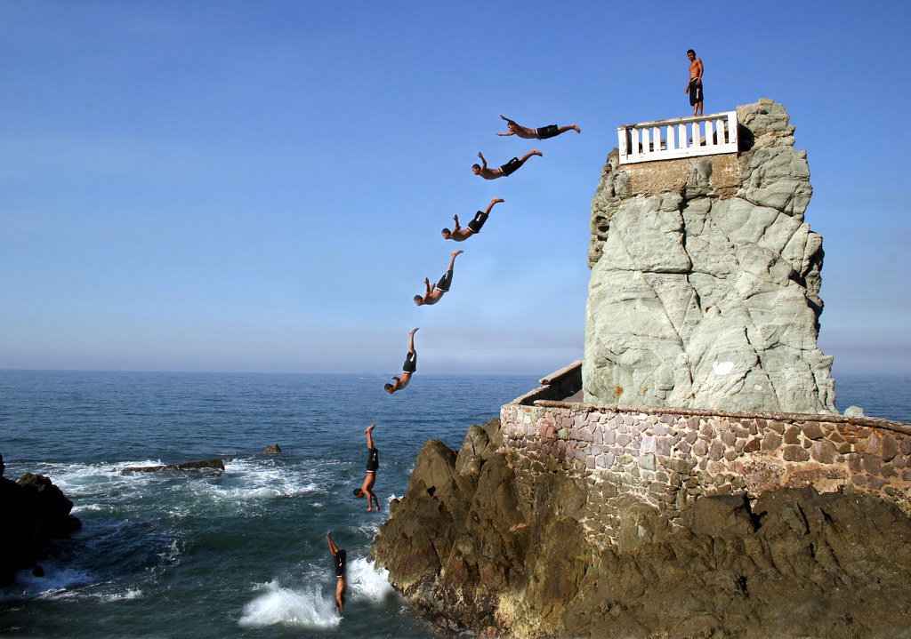

Fun Activities to do during the day!
Mazatlan Sinaloa offers many fun activities you can do with your family or as a couple below there is a list of activities which you can choose from.

Day Activities!
- Gran Acuario Mazatlan
- El Quelite
- Mazagua Water Park
- Isla de la Piedra Mazatlan
- Bosque de la Ciudad
- Half-Day Ziplining
- Half-Day Tour to Tequila Factory and Villages
- ATV Tour into Sierra Madre with Lunch
- Mazatlan City Tour and Observatory
- Malecon de Mazatlan
- Mazatlan Sightseeing and Beach All Inclusive
- Catedral Mazatlan Basilica de la Inmaculada Concepcion
- Playa Brujas
- Ten Islands Expedition
The beautiful city of Mazatlan Sinaloa is waiting for you and your family choose which activites you want to do and plan your vacation today!
Today is the day to stop your worrying and begin your adventure in one of the most beautiful and fun cities Mazatlan Sinaloa.